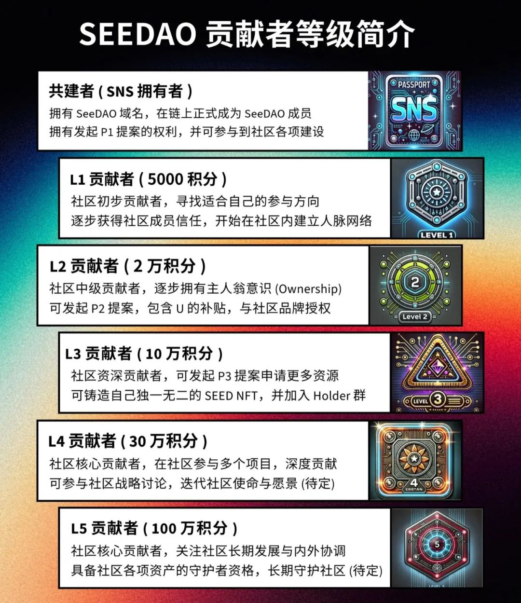

亲爱的社区成员&伙伴们：
今晚八点，是咱们SeeDAO每周一次的社区生活大会，是第九届节点共识大会后的第一次社区大会；今天也是比特币突破了 10 万美元的历史性关口，成为一个市值近 2 万亿美元的金融巨兽。
上午，Seed NFT 持有者群组动态，社区成员纷纷接龙：
恭喜SeeDAO 被动暴富。
如果你想了解情况，今晚八点社区运营Ashley汇集要点，邀约嘉宾分享，为大家准备精彩内容。邀请您与我们一起展开社区线上生活，于共在中对话。
今 晚 主 题：
1、如何更多了解、参与SeeDAO ？—— Ashley
简介：作为华语最大的链上DAO组织，社区有领先的自动化治理，清晰的贡献者权责利体系，明确的白皮书数字城邦愿景。
制图：Ricky
2、BTC突破10万，社区金库BTC托管后续处理方案 —— Ricky
相关提案：https://app.seedao.xyz/proposal/thread/284
3、研发公会介绍与成员招募 —— Lulu
活动地点：
zoom会议号：539 363 9014
密码：seedao
活动时间：
今天 12月5日 北京时间 晚上八点